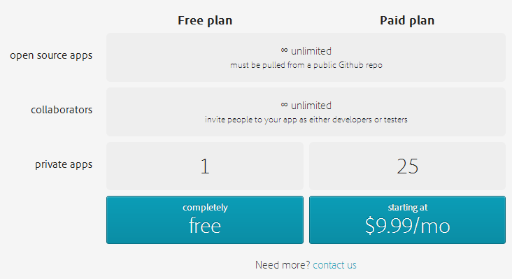
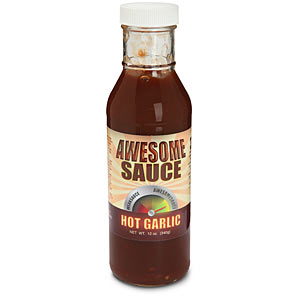

Introduction to PhoneGap
Making native-only devs jealous since 2009
Presented by Raymond Camden / @cfjedimaster
Who am I?
- Raymond Camden
- Developer Evangelist for Adobe
- Web Standards, HTML5, JavaScript, ColdFusion
- Blogging at raymondcamden.com
- Tweeting at @cfjedimaster


Genesis
- Built at an iPhoneDevCamp in 2009
- Started by Nitobi
- Adobe bought Nitobi (2011)
$$$?
- PhoneGap is free
- No, really, free
- Open Source
Apache Cordova
- cordova.apache.org
- PhoneGap is Adobe's implementation
- PhoneGap == Cordova
Let's get techy
- Creates "Hybrid" applications
- Native wrapper around a web view
- You code in HTML, JavaScript, and CSS
- PhoneGap "bridges the gap" to native capabilities
About that gap...
- PhoneGap tries to follow standards
- When it doesn't need to do anything, it doesn't
- In the perfect world, PhoneGap won't exist
Supported Platforms
- iOS
- Android
- Windows Phone 7/8 (+ Windows 8)
- BlackBerry
- Bada
- WebOS
- Symbian
Features
- Accelerometer - when the device moves
- Camera - pictures of your cat
- Capture - audio, video, stills of your cat
- Compass - for when you're lost in the woods
- Connection - type of connection
Features
- Contacts - find and create new friends
- Device - device and OS version metadata
- Events - various app/hardware related events
- File - native file system access (+ upload)
- Geolocation - for when you're lost in the woods
Features
- Globalization - date/number/currency formatting
- Media - related to audio playback (supports record as well)
- Notification - visual, audible, and tactile notifications
- Splashscreen - for your splash screen needs
- Storage - Mini database
Unofficial Features
- Use any of the 10 million JavaScript libraries
- Use any of the 10 million APIs
- Deploy to app store
Non-Features
- UI
- Convert your CF/PHP/Perl CGI site to native
- Native Killer
Who is using PhoneGap?
Real World Demo
How is it done?
- Going from HTML to Binary
- Making use of the awesome
How is it done? (Option 1)
- Get SDK(s) + Cordova download
- Command line init
- Switch to the editor for that platform
- Edit HTML, simulate, build
Demo
How is it done? (Option 2)
- cordova-client
- https://git-wip-us.apache.org/repos/asf?p=cordova-cli.git
- "Meta Tool"
- Still requires SDKs
- All command line
(Not official!)- Added to PhoneGap 2.4.0
Demo
How is it done? (Option 3)

How do we do the awesome?
- Include cordova-VERSION.js
- Only does what it has to...
- config.xml (but we'll worry about that later)
- plugins (but we'll worry about that later)
Demo
Real World Building
- Desktop Browser
- Mobile via Web
- Ripple Emulator
- Local SDK to Simulator/Device
Desktop Browser
- Pro: Super Fast
- Pro: No setup
- Pro: Debugging Rocks
- Con: UI isn't right
- Con: UX isn't right
- Con: Features missing
- Con: Security restrictions
Mobile Via Web
- Pro: Kinda Fast
- Pro: Minimal setup
- Pro: UI and UX testing
- Con: Features missing
- Con: Security restrictions
- Con: Debugging (kinda) sucks
Ripple Emulator
- Pro: Fast
- Pro: Similar UI
- Pro: Free
- Pro: Security restrictions gone
- Con: Doesn't support 100% of the PhoneGap APIs
- Con: Still not on the device
To Install
- Go to the Chrome Web Store: https://chrome.google.com/webstore/category/home
- Search for "ripple"
- click Extensions
Demo
Local SDK to Simulator/Device
- Pro: The Real Deal
- Con: Slow(ish)
- Con: Not Free
- Con: Debugging can suck
TO BE CLEAR: YOU MUST ALWAYS TEST ON A REAL DEVICE
Demos
- device api
- accelerometer api
- connection api
- websql api
PhoneGap Build
The 411
- Web based platform to do builds
- Supports iOS, Android, Windows Phone, Blackberry, webOS, Symbian
- Has an API too
- NO SDKS NO COMPILING NO MESS!
$$$
Notes
- You reference cordova.js or phonegap.js, but don't include it.
- config.xml controls many things, like icons
- Plugin support is limited
config.xml
- Defines various settings
- some are platform specific...
- splash screen, icons, Android permission
- Example
Demo
Hydration
Plugins
Plugins
- Written in their native language (that follows an API)
- Ship with a JavaScript wrapper
- Include them in your project
Examples
- TTS
- Barcode scanner
- SMS
- Intents
Child Browser
PhoneGap Build Support
- ChildBrowser
- Barcode Scanner
- Analytics
- Generic Push
- Facebook Connect
Example
Debugging
Your options
- Stick to the desktop
- Remote debugging (mobile web, Chrome/Safari)
- console.log - for objects, do: console.log(JSON.stringify(x))
- Yeah, seriously
Remote Debugging
Demo
Where next?
- Active, and helpful, Google group
- Multiple books